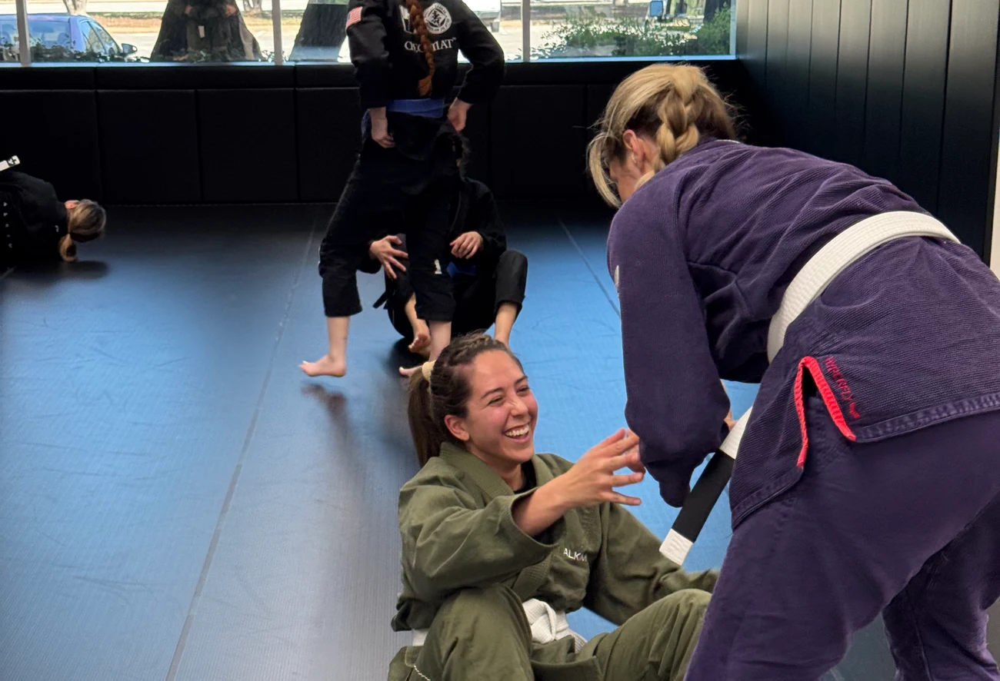
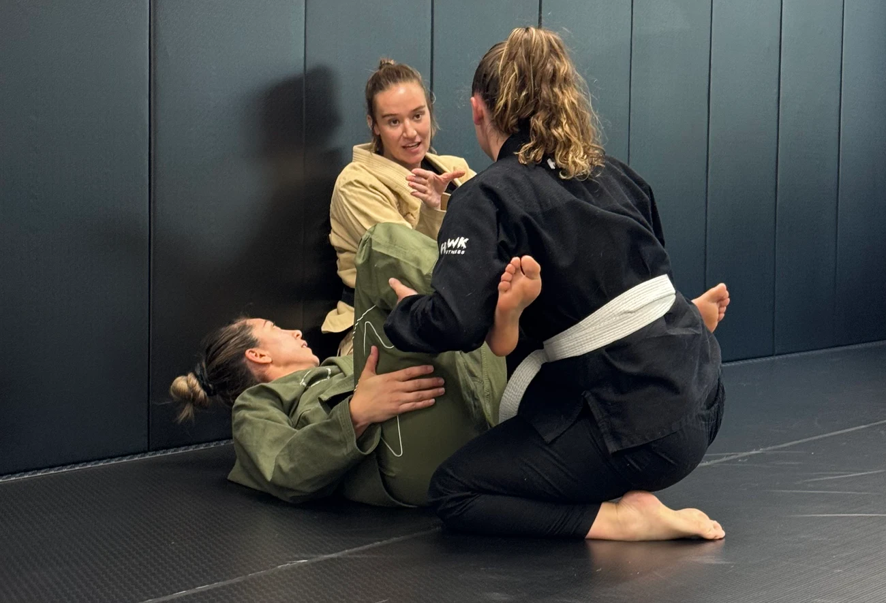
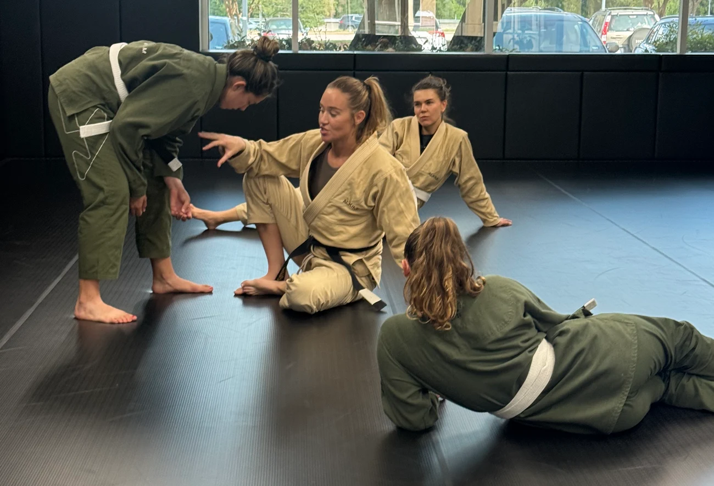
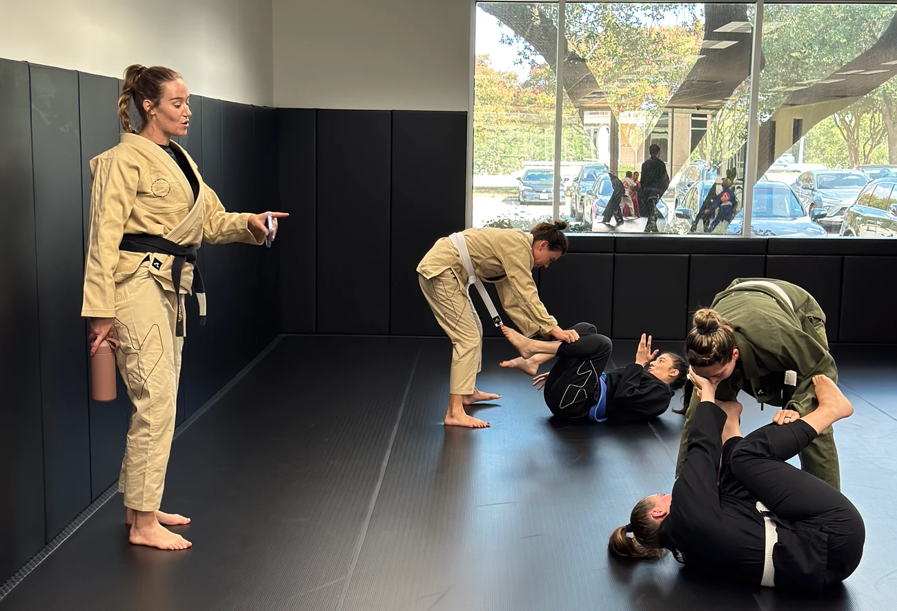
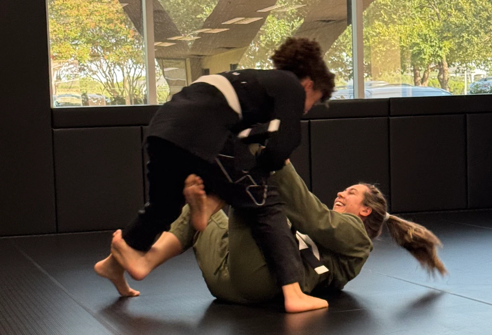
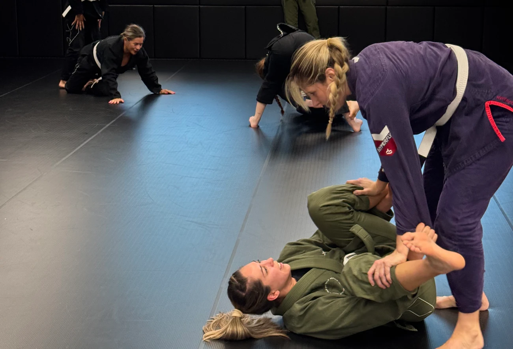
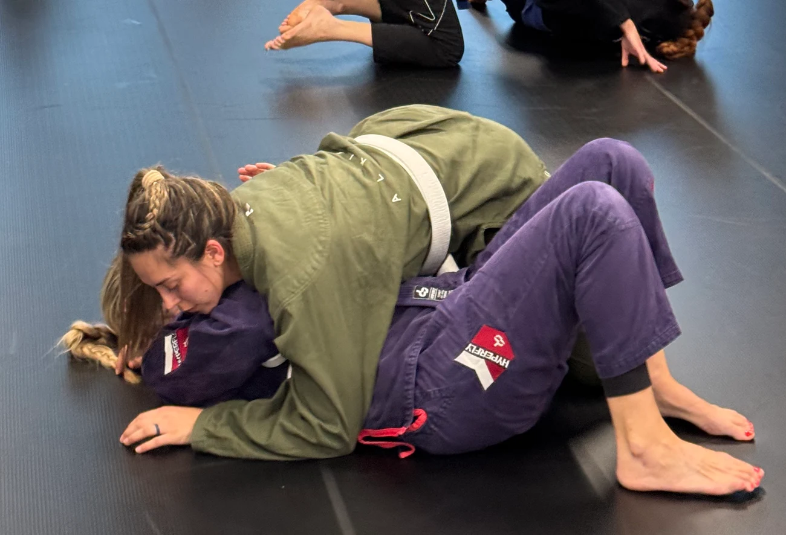
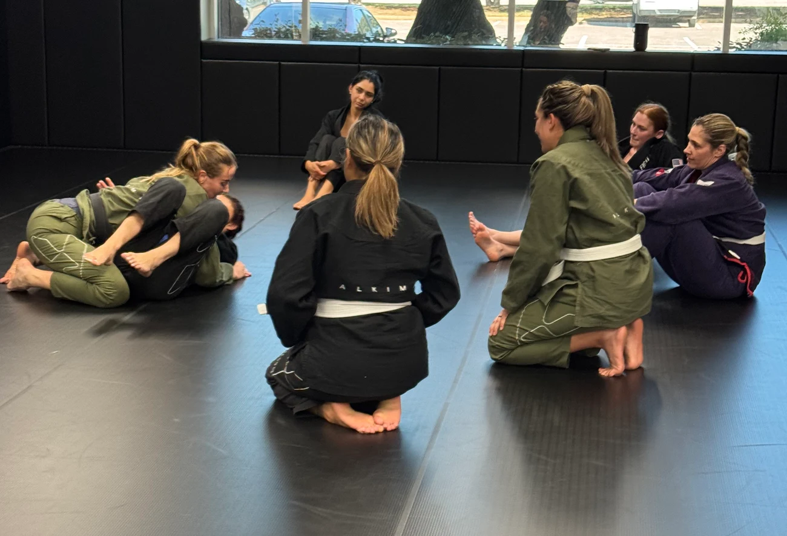

0.0–3.8 s · HOOK
First frame readable. Photo already present; subtle push-in, gold underline draws under have your back.
D051ALKIMI JIU-JITSU · WOMEN CLASSES · 15 OUT 2026
Checkpoint 1. Copy, direção visual e enquadramentos para revisão. Fotos reais, referências aprovadas e nenhuma geração paga.
CONCEITO 01
O convite vem antes da modalidade. A foto abre com uma interação espontânea; o texto entrega pertencimento.
Find women who have your back. At Alkimi, train in a women-only class led by a female coach. Learn together, cheer each other on, and build confidence one class at a time. No experience needed. Start from zero and go at your own pace. Your first class is a place to begin. Book your trial class at Alkimi, South Austin.
28.4 s de montagem provisória. Duração e cortes serão recalibrados pela gravação aprovada.0.0–3.8 s · HOOK
First frame readable. Photo already present; subtle push-in, gold underline draws under have your back.
D051
3.8–8.6 s · CLASS
Rose panel wipe over 8 frames; keep faces clear in the wide photo panel.
D016
8.6–14.4 s · CARD 1/3
Three-card stepped carousel. 1.93-second slots; 6-frame move and about 1.73 seconds dominant hold. No tilted stack.
D011 · D005 · D055
8.6–14.4 s · CARD 2/3
Three-card stepped carousel. 1.93-second slots; 6-frame move and about 1.73 seconds dominant hold. No tilted stack.
D011 · D005 · D055
8.6–14.4 s · CARD 3/3
Three-card stepped carousel. 1.93-second slots; 6-frame move and about 1.73 seconds dominant hold. No tilted stack.
D011 · D005 · D055
14.4–18.4 s · BEGIN
Clean blush typographic pause. Two lines enter in sequence, not accumulating badges.
Somente tipografia e marca
18.4–22.0 s · COACH
Wide image preserves the coach on the left and the practice on the right; short crossfade.
D002
22.0–28.4 s · CTA
Gold button and official logo. Fee visible throughout. Final 2.4 seconds stable, subject to voice measurement.
Somente tipografia e marcaFind women who have your back. Women's Jiu-Jitsu at Alkimi, South Austin. No experience needed. Book your trial class.
Opening 0–3.4, women-only photo 3.4–6.5, no-experience type 6.5–8.5, CTA 8.5–15. No carousel. Actual trims after voice approval.
A edição curta deve terminar a fala até 12,6 s. Não há gravação nem EDL final nesta etapa. A taxa permanece no CTA. Não acelerar voz para fechar 15 s.

CONCEITO 02
Autonomia e aprendizado concreto. Sem cenas de ameaça, medo ou promessa de invulnerabilidade.
You don't need to be stronger. Learn what to do. Practice how to break a grip, get back up, and create space to get away. Learn in a women-only class, with a female coach and partners who support your progress. No experience needed. Start at your own pace. Build skills through technique and guided practice. Book your trial class at Alkimi, South Austin.
30.4 s de montagem provisória. Duração e cortes serão recalibrados pela gravação aprovada.
0.0–5.0 s · HOOK
Type enters in two beats; photo movement stays subtle and does not simulate a technique.
D049
5.0–10.6 s · SKILLS
Sequential numbered lines, clean dark background. No attack reenactments or impact effects.
Somente tipografia e marca
10.6–16.6 s · CARD 1/3
Three cards over 6 seconds. 6-frame step, 1.8-second dwell. Photos illustrate practice, not specific escape instructions.
D016 · D054 · D011
10.6–16.6 s · CARD 2/3
Three cards over 6 seconds. 6-frame step, 1.8-second dwell. Photos illustrate practice, not specific escape instructions.
D016 · D054 · D011
10.6–16.6 s · CARD 3/3
Three cards over 6 seconds. 6-frame step, 1.8-second dwell. Photos illustrate practice, not specific escape instructions.
D016 · D054 · D011
16.6–20.6 s · PACE
Blush pause with large clear lettering, no security guarantees.
Somente tipografia e marca
20.6–24.0 s · COACH
Wide coach photo with a restrained 3% push-in.
D002
24.0–30.4 s · CTA
Consistent branded end card, fee and 2.4-second post-voice hold.
Somente tipografia e marcaLearn practical self-defense. Women's Jiu-Jitsu at Alkimi, South Austin. No experience needed. Book your trial class.
Skill-led hook 0–3, coached practice 3–7, beginner support 7–8.5, CTA 8.5–15. Record separately or use clean phrase edits only after measurements.
A edição curta deve terminar a fala até 12,6 s. Não há gravação nem EDL final nesta etapa. A taxa permanece no CTA. Não acelerar voz para fechar 15 s.

CONCEITO 03
Confiança como prática contínua, com apoio de outras mulheres. Sem transformação garantida ou comparação corporal.
Build confidence. One class at a time. You don't need experience to start. Go at your own pace. Learn practical Jiu-Jitsu in a women-only class, with a female coach guiding you. Train alongside women who learn with you and cheer you on. Take your first step on the mat. Book your trial class at Alkimi, South Austin.
28.6 s de montagem provisória. Duração e cortes serão recalibrados pela gravação aprovada.
0.0–4.2 s · HOOK
Lettering first, confidence resolves in gold. No before-and-after framing.
Somente tipografia e marca
4.2–8.6 s · START
Panel opens to coach and class together, no portrait crop that loses the coach.
D002
8.6–14.6 s · LEARN
Slow push-in toward the human interaction. Text stays in its own band.
D011
14.6–19.0 s · CARD 1/3
Three cards over 4.4 seconds, 6-frame moves and about 1.27-second dwell. Less dense than Kids carousel.
D016 · D005 · D055
14.6–19.0 s · CARD 2/3
Three cards over 4.4 seconds, 6-frame moves and about 1.27-second dwell. Less dense than Kids carousel.
D016 · D005 · D055
14.6–19.0 s · CARD 3/3
Three cards over 4.4 seconds, 6-frame moves and about 1.27-second dwell. Less dense than Kids carousel.
D016 · D005 · D055
19.0–22.2 s · READY
Return to human connection with the smiling interaction; no forced transformation claim.
D051
22.2–28.6 s · CTA
Shared end card and legible commitment fee, final hold measured after voice.
Somente tipografia e marcaBuild confidence, one class at a time. Women's Jiu-Jitsu at Alkimi, South Austin. Start from zero. Book your trial class.
Type hook 0–3.5, guided-practice photo 3.5–7, beginner support 7–8.5, CTA 8.5–15. Confirm recording fits without speed change.
A edição curta deve terminar a fala até 12,6 s. Não há gravação nem EDL final nesta etapa. A taxa permanece no CTA. Não acelerar voz para fechar 15 s.

COMMUNITY · TESTE CONTROLADO
A abertura A mostra a conexão entre as mulheres no primeiro frame. A abertura B usa apenas lettering. O restante do anúncio e a frase de voz são iguais, para isolar o teste visual.
Recomendada para a primeira publicação, por mostrar a comunidade imediatamente.

Variação de contraste visual, sem necessidade de gerar uma segunda voz.
540 × 960, 30 fps, sem som. Mostra o deslocamento dos cards, a hierarquia visual e as pausas. A sincronização final não está aprovada.
Abrir estudo de movimentoCURADORIA E ENQUADRAMENTO
As 69 referências do Drive correspondem a 59 imagens únicas. Nenhum arquivo faltando no acervo local. Oito finalistas: cinco tier A e três tier B. Recortes foram ampliados e revisados para preservar rostos, mãos e interação.
As fotos ficam em painéis editoriais dentro do canvas. Por isso, não são cortadas cegamente em 9:16. As colunas das folhas abaixo correspondem ao painel de Reels e ao painel de Feed. O 4:5 é recomposto, não um corte do vídeo vertical.

D051 · IMG_4206.HEIC · A / 87
Community opening, Confidence close
IMG_4206 provided and approved previously by user. Avoid placing text over the seated face.

D011 · IMG_3669.HEIC · A / 91
Guided practice, Community carousel
Original of LP women-hero. Keep the face at the lower left, not just the instructor.

D016 · IMG_3786.HEIC · A / 85
Women-only class, Community carousel
Original of LP women-class. Preserve the three faces above the foreground participant.

D002 · IMG_3613.HEIC · A / 88
Female coach, Confidence opening photo
Original of LP women-coach. A wide panel preserves the instructor AND class; a centered vertical crop would lose her.

D005 · IMG_2974.HEIC · B / 79
Practice carousel
Original of LP women-final. Slight motion softness. Supporting photo, not opening hero.

D049 · IMG_4216.HEIC · A / 85
Self-defense hook and practice
Editorial illustration of supervised practice, not a claim that this frame teaches a specific escape.

D054 · IMG_4169.HEIC · B / 74
Self-defense carousel
Use as supporting action only; one participant's face is naturally hidden.

D055 · IMG_4142.HEIC · B / 71
Community group context and reserve
Wide group context, not individual portrait. No artificial vertical zoom.

 Inventário Drive 1 · Inventário Drive 2 · Inventário Drive 3 · Inventário Drive 4 · Inventário Drive 5 · Fotos da LP
Inventário Drive 1 · Inventário Drive 2 · Inventário Drive 3 · Inventário Drive 4 · Inventário Drive 5 · Fotos da LPESCOPO E PRÓXIMO CHECKPOINT
Fontes: HOOKS, LP Women local, Drive Alkimi, brandbook 2025 e quadros dos seis vídeos Kids aprovados. O HOOKS orienta os ângulos; a LP atual prevalece para oferta e dinâmica das aulas. A família rosa é a adaptação visual já existente na LP Women.
Revisão de referência realizada por frames, não reprodução integral com áudio. Sem aprovação do Meta alegada. A checagem em prévias reais dos posicionamentos segue pendente.
Verificações desta etapa · Copy e tempos editáveis · Comandos e documentação